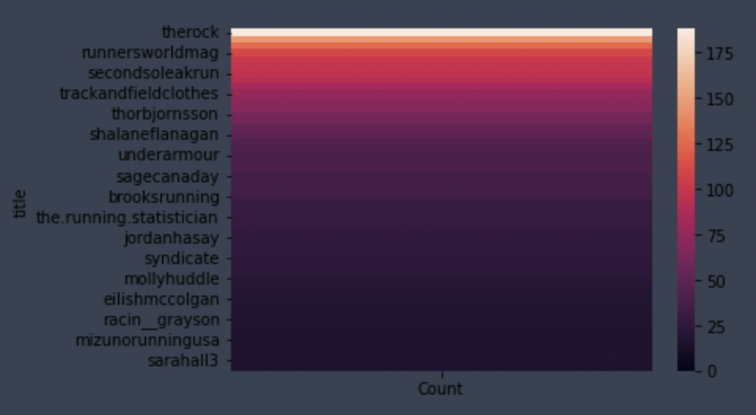

This project was my final project in my undergrad. I had the chance to work on the backend software of a dashboard that displayed the number of free parking spaces in a given parking lot at my university. Me and my group used ESP32 microcontrollers, and laser sensors to count the number of cars going in and out of the parking lot driveway. These controllers then communicated on the backend to a remote server.
The backend work included defining sockets for the controllers to connect to. This was done in C, and used stream sockets primarily. We then created multiple child processes to communicate over the port and update the data. This was then pushed to a react dashboard for viewing.
I really enjoyed the low-level programming aspect of the project in C. It was interesting to learn about message protocol, and to develop one for my group. A favorite course of mine from undergrad was a systems programming elective. In this we learned a lot about Unix programming, and digging into manuals and documentation for system calls that have been around longer than I have been alive, and are still being used was an awesome expereince.
I like analyzing data and investigating what parts of my own data are being collected by the apps I use everyday. The following image is a heatmap of my own instagram likes cleaned using python and displayed with seabord.
My hypothesis for the project was that my likes would be distributed.
This was the product of an elective I took in undergrad. C# was new to me, as well as the entire unity suite. I would say the only part of the course I was comfortable in was the linear algebra aspect of the course!
Nevertheless, I was able to create a final product, full of the most stunning volleyball gameplay, sprites, and controls never before seen.
In the end it was a great learning experience, and if I ever get an itch to create something with unity, I am happy I took the course.
I am a driven individual with a passion for technology